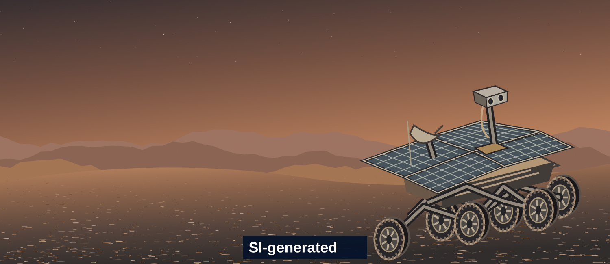

A wet past
Opportunity found tiny round mineral grains and layers in rock. Together with the chemistry, those clues helped scientists reconstruct a time when liquid water shaped its landing site.

Where are they now?
A rover falls silent. A spacecraft keeps going. Discover five machines that changed what we know about worlds beyond our own.
Pick a machine. Open its file. Follow the evidence it left behind.
Trace the collection from our nearest neighbor to the space between stars. Choose a destination to find its hardware.
How do you study something you can’t reach? Look for what it changes.
Opportunity found tiny round mineral grains and layers in rock. Together with the chemistry, those clues helped scientists reconstruct a time when liquid water shaped its landing site.
InSight stayed in one spot and listened. Waves from marsquakes traveled through the planet’s layers. Their paths gave scientists a way to study the crust, mantle and core.
LCROSS watched debris rise from a shadowed lunar crater. By splitting the light from that cloud into different wavelengths, scientists identified the signature of water.
Follow a machine from launch to its last signal, or onward into deep space.
Use evidence from the archive to identify the explorer.
A wheel track. A box of Moon rocks. A faint line on a scientist’s screen. Long after a machine stops moving, someone can still ask a new question of what it sent home.
Revisit the archive ↑Follow each file back to NASA’s mission records. The archive’s landscape and hardware illustrations are AI-generated artistic interpretations, visibly labeled “SI-generated”. Each mission file also includes a credited archival image.